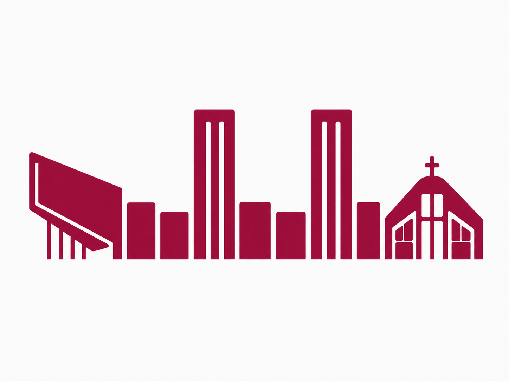

Reflexión pedagógica
Ayudar a formular mejores preguntas sobre aprendizaje, barreras, perfiles, evaluación auténtica y sentido de las experiencias.

Santa María la BlancaColegio Santa María la Blanca · 2026
Plan de acompañamiento pedagógico e innovación sostenible para que EBI vuelva a ser una experiencia viva, clara, acompañada y visible en el aula.
El Departamento de Innovación debe situarse en el centro de la vida pedagógica del colegio: un equipo que escucha, traduce, acompaña, diseña, ordena, documenta y mide aquello que mejora los procesos de enseñanza y aprendizaje.
Ayudar a formular mejores preguntas sobre aprendizaje, barreras, perfiles, evaluación auténtica y sentido de las experiencias.
Apoyar guías, proyectos, rincones, centros de aprendizaje, órbitas, actividades, materiales e instrumentos de evaluación.
Observar, escuchar, recoger evidencias, ajustar propuestas y hacer viable que las ideas lleguen al día a día docente.
Propuesta WOW
Santa María la Blanca ya cuenta con un sistema pedagógico propio. El reto es actualizarlo, simplificarlo y hacerlo aplicable en el aula, con evidencias que puedan compartirse con docentes, familias y alumnos.
Implantación progresiva, adaptación al nivel madurativo, rutinas de aula, acompañamiento, evaluación y mejora continua.
Tutoría, colaboración con familias, formación permanente, trabajo en equipo e intercambio de experiencias docentes.
Acompañamiento personalizado, aprendizaje activo, bienestar, IA ética, pensamiento crítico y seguimiento individualizado.
Perfil de aprendizaje y relaciones significativas.
Planificación centrada en el alumno, identidad docente, comunidad de aprendizaje y transformación del currículum.
Revisión estratégica
La propia PGA ya señala la actualización del Sistema EBI como área de mejora: adecuarlo a nuevas necesidades de alumnado, familias y profesorado, mejorar resultados y consolidar orientación, convivencia y procedimientos compartidos.
El alumnado aprende, se comunica y accede al conocimiento de formas distintas a las de hace diez años.
La tecnología debe integrarse con criterio pedagógico, ético y transparente, incluyendo niveles claros de uso de IA en evaluación.
El profesorado necesita herramientas viables y las familias necesitan evidencias del valor diferencial del colegio.
Benchmarking
No se trata de copiar modelos, sino de contrastar EBI con centros referentes: cómo comunican su modelo, cómo lo concretan por etapas, cómo acompañan al profesorado, cómo integran IA y cómo hacen visible el aprendizaje. En IA conviene incorporar una escala de uso en evaluación que dé claridad a docentes y estudiantes según los objetivos de aprendizaje.
Primera acción estratégica
Un proceso breve, claro y participativo para convertir la experiencia diaria del profesorado en el punto de partida del plan anual de innovación.
Identificar necesidades reales antes de abrir nuevas líneas de trabajo: tiempos, evaluación, materiales, coordinación, atención a la diversidad y aplicación práctica de EBI.
Escucha estructurada
Preguntas concretas sobre necesidades, expectativas, dificultades e intereses formativos.
Prioridades de Escuelita, Infantil, Primaria, ESO, Bachillerato y FP.
Carga, confusión o dificultad en guías, evaluación, coordinación, tiempos, EBI o comunicación.
Visibilizar lo que ya funciona y convertirlo en aprendizaje compartido.
Del diagnóstico a la acción
El departamento no está para pedir más, sino para ayudar mejor. Estos servicios traducen las necesidades detectadas en apoyo concreto.
Acompañamiento en el diseño o revisión de guías para hacerlas más claras y útiles.
Ver detalleQué hacemos: revisamos objetivos, secuencia, evidencias, tiempos y nivel de autonomía del alumnado para que la guía sea más clara y aplicable.
Entregable: guía ajustada, checklist de mejora y propuesta de próximos pasos.
Cuándo pedirlo: cuando una guía genera dudas, carga o no termina de funcionar en aula.
Creación de experiencias activas, inclusivas y alineadas con objetivos de aprendizaje.
Ver detalleQué hacemos: transformamos una actividad en una experiencia más activa, con reto claro, producto, cooperación y conexión con competencias.
Entregable: plantilla de actividad, materiales base y criterios de evaluación asociados.
Cuándo pedirlo: cuando una sesión necesita ganar sentido, participación o transferencia.
Rúbricas, dianas, listas de cotejo, portfolios y autoevaluaciones sostenibles.
Ver detalleQué hacemos: diseñamos instrumentos sencillos para recoger evidencias sin multiplicar burocracia ni duplicar trabajo.
Entregable: rúbrica, diana, lista de cotejo o portfolio listo para usar.
Cuándo pedirlo: cuando se quiere evaluar mejor pero de forma manejable.
Mirada pedagógica cercana, feedback útil y ajustes para llevar propuestas al aula.
Ver detalleQué hacemos: entramos al aula para observar una práctica acordada, recoger evidencias y conversar después sobre ajustes posibles.
Entregable: devolución pedagógica breve con fortalezas, fricciones y una mejora prioritaria.
Cuándo pedirlo: cuando se quiere probar algo nuevo o mejorar una dinámica concreta.
Documentación de recursos, materiales y buenas prácticas para compartir cultura profesional.
Ver detalleQué hacemos: ordenamos recursos existentes, documentamos buenas prácticas y las hacemos localizables por etapa, área y necesidad.
Entregable: recurso etiquetado, ficha de uso y ejemplo de aplicación.
Cuándo pedirlo: cuando una práctica funciona y merece compartirse con otros equipos.
Uso de IA para reducir carga docente y mejorar materiales sin perder sentido pedagógico.
Ver detalleQué hacemos: ayudamos a usar IA para adaptar materiales, generar borradores, simplificar textos o crear propuestas, siempre con revisión docente.
Entregable: flujo de trabajo, prompts base y material mejorado.
Cuándo pedirlo: cuando la IA puede ahorrar tiempo sin sustituir el criterio pedagógico.
Codiseño de proyectos, rincones, centros de aprendizaje y órbitas por etapa.
Ver detalleQué hacemos: codiseñamos estructuras de aprendizaje con hilo conductor, roles, recursos, evaluación y momentos de seguimiento.
Entregable: mapa del proyecto, secuencia de sesiones y recursos esenciales.
Cuándo pedirlo: cuando se quiere crear o revisar una propuesta amplia por etapa o materia.
Sesiones prácticas según necesidades reales, con aplicación inmediata en el aula.
Ver detalleQué hacemos: diseñamos sesiones cortas centradas en una necesidad concreta y con práctica inmediata.
Entregable: material de sesión, ejemplo resuelto y pauta de aplicación.
Cuándo pedirlo: cuando varios docentes comparten una misma dificultad o quieren alinear criterios.
Líneas estratégicas
Mapa por etapas, lenguaje común, plantillas simplificadas y ejemplos reales.
Consulta pedagógica, codiseño, microformaciones y feedback no evaluativo.
Diseño universal, materiales accesibles, actividades multinivel y coordinación con Orientación.
Uso ético de IA para reducir carga docente y mejorar el diseño de aprendizaje.
Rúbricas, dianas, portfolios, coevaluación y seguimiento de autonomía.
Pilotos por etapa, documentación breve, transferencia y escalado progresivo.
Relato claro de EBI, evidencias de aula, infografías para familias y muestra anual.
Innovación profundamente pedagógica
Cualquier propuesta debe partir de preguntas educativas profundas y acabar en una práctica más clara, conectada y viable.
Radar de revisión para comprobar que una propuesta no solo es novedosa, sino clara, inclusiva, evaluable y viable.
Función estratégica
Lectura por etapas
Sostenible y medible
La innovación debe ser útil para el profesorado, viable en los tiempos reales del centro y observable mediante evidencias sencillas.
Estos indicadores no son resultados actuales: son campos de seguimiento que deben fijarse tras Voz Docente y revisarse durante 2026.
Campo de seguimiento para valorar si las propuestas simplifican la aplicación de EBI.
La medición se entiende como una lectura sencilla de utilidad, aplicación en aula y cultura compartida.
Impacto WOW
El cambio real será que el profesorado quiera acudir al departamento porque encuentra ayuda, claridad, recursos y acompañamiento.
“Tengo una guía que no termina de funcionar, ¿me ayudas a darle una vuelta?”
“Quiero evaluar mejor, pero no sé cómo hacerlo sin complicarme.”
“Tengo alumnos con ritmos muy distintos, ¿cómo puedo adaptar esta actividad?”
“Quiero usar IA, pero con criterio y sin perder el sentido pedagógico.”
“Quiero hacer algo diferente, pero viable.”
Hoja de ruta
Escucha a profesorado, familias y alumnado; documentación, buenas prácticas y fricciones.
Análisis de referentes, tendencias educativas, IA, bienestar y comunicación de valor.
Relato EBI 2030, mapa por etapas, herramientas prioritarias e indicadores de impacto.
Experiencias pequeñas por etapa para validar herramientas antes de escalarlas.
Microformaciones, codiseño, observación no evaluativa, mentoría y recursos Moodle.
Infografías por etapa, memoria pedagógica, muestra “EBI se hace aula” y evidencias para familias.
Base de conocimiento
La documentación del plan puede organizarse en Moodle porque es un entorno educativo, con control de accesos, trazabilidad, estructura por cursos o etapas y mayor capacidad para ordenar recursos, guías, criterios, evidencias y buenas prácticas.
Horizonte EBI 2030
La propuesta no se agota en 2026-2027. El plan debe ordenar tres años de evolución: revisar el sistema, consolidarlo por etapas y convertirlo en valor visible para la comunidad educativa.
Diagnóstico EBI, benchmarking, mapa por etapas, primeros pilotos y base Moodle.
Equipos impulsores, formación interna, recursos comunes y prácticas validadas.
Modelo maduro, indicadores estables, cultura compartida y comunicación de valor.
Gobernanza
El plan necesita estructura para no depender solo de personas concretas: liderazgo claro, equipos por etapa, canales de escucha y una base común de conocimiento.
Modelo de madurez EBI
Indicadores por año
Riesgos y mitigación
Portfolio estratégico
Calendario anual tipo
Mapa de evidencias
Escenario final 2029
Síntesis
El Departamento de Innovación debe convertirse en una estructura pedagógica que cuide al profesorado, fortalezca EBI, escuche la realidad del aula, genere recursos útiles y haga visible el impacto de la innovación en el aprendizaje de los alumnos.